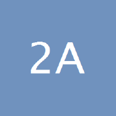

造浪者们，是谁？
为什么值得每天看一眼？
这个 app 追踪的内容全部来自下面的信息源。筛选标准一句话：
关注「动手造东西的人」，而不是转述观点的网红。
数据是怎么来的
上游：开源项目 follow-builders 的机器人每天定时采集以上信息源的公开内容，打包成三个 JSON 文件放在 GitHub 上。
本 app：直接读取这些公开文件，按天整理展示。历史内容通过 GitHub 的每日快照记录回填（默认 14 天，设置里可调）。
版权：内容版权归原作者所有，本 app 仅作个人阅读用途。
26X 上的 AI 构建者
刻意覆盖整个生态：模型公司的掌门人与一线负责人、编程工具创始人、独立开发者、投资人与内容人。
🧠 研究者与布道者
履历与背景
斯坦福博士，师从李飞飞。OpenAI 创始成员，后任特斯拉 AI 总监主导自动驾驶视觉系统，现创办 AI 教育公司 Eureka Labs。
AI 成果
- 全球最受欢迎的深度学习公开课（Zero to Hero 系列）
- 提出 "Software 3.0"（自然语言编程）等影响行业的概念
- 开源 nanoGPT、llm.c，把大模型原理"拆开给人看"
履历与背景
本名 Shawn Wang，先后在 AWS（Alexa）和 Cloudflare 做开发者关系，现全职投入 AI 内容与创业孵化。
AI 成果
- 《The Rise of the AI Engineer》定义了"AI 工程师"这个新职业
- Latent Space 播客与 AI Engineer 峰会的核心节点
🤖 Anthropic 阵营（Claude 的缔造者们）
履历与背景
资深工程人，曾任职 Facebook 等，在 TypeScript 圈早有名望。
AI 成果
- 在 Anthropic 内部孵化并主导创造了 Claude Code
- 持续分享"AI 时代怎么写代码"的实战方法论
履历与背景
纽约大学哲学博士，Anthropic 创始团队元老。
AI 成果
- Claude 的"性格与价值观"主要塑造者（Character 方向负责人）
- 把哲学方法引入 AI 对齐实践

{this.remove()};this.src='https://unavatar.io/twitter/alexalbert__?fallback=false'" alt="Alex Albert 头像" loading="lazy" referrerpolicy="no-referrer" onerror="this.remove()">履历与背景
创业者出身，Anthropic 面向开发者世界的"门面"。
AI 成果
- Claude 3 / Artifacts / Computer Use 等发布背后的对外主讲人
履历与背景
Claude Code 团队的产品工程师。
AI 成果
- 演示新功能、收集一线反馈并快速落地
履历与背景
Claude Code 产品方向的负责人。
AI 成果
- 把 Claude Code 从内部工具带向主力开发工具的产品操盘手
履历与背景
Claude Code 团队成员，此前经历 YC 创业、South Park Commons、MIT 媒体实验室。
AI 成果
- 面向开发者演示与推广 Claude Code，产出大量上手教程
履历与背景
Anthropic 官方账号，产品发布与能力上新的一手渠道。
🟢 OpenAI / Google 阵营
履历与背景
2019 年起执掌 OpenAI，这一轮 AI 浪潮最核心的操盘者之一。
AI 成果
- 做出 ChatGPT，把 AI 推到十亿人面前；GPT 路线的关键决策人
履历与背景
在 Google 搜索基础设施深耕多年，现领导 OpenAI Codex 工程。
AI 成果
- "AI 自己写代码"赛道的核心工程操盘手之一
履历与背景
Google 消费级 AI 产品线实权负责人。
AI 成果
- 统领 Gemini 应用、AI Studio、NotebookLM；NotebookLM 音频概览等现象级功能的推动者
履历与背景
Google 实验部门官方账号（NotebookLM、Jules、Flow 等）。
🛠 编程工具掌门人
履历与背景
早年参与 Codecademy 与 Hacker News 基础设施，2016 年创办 Replit。
AI 成果
- Replit Agent——"一句话搭一个应用"，把 AI 编程带给零基础人群
履历与背景
开源明星：写了百万开发者在用的 Next.js，2015 年创办 Vercel。
AI 成果
- v0——自然语言生成界面与全栈应用，定义"AI 生成式开发"范式
履历与背景
iOS 场标志性人物，创办 PSPDFKit 做到行业第一；"退休"后杀回 AI 领域。
AI 成果
- OpenClaw——让 AI 智能体真正"动手干活"的开源框架；公开全部极限工作流实验
💼 投资人与企业掌门人
履历与背景
2005 年辍学创办 Box，企业软件圈服役最久的 CEO 之一。
AI 成果
- Box AI——把大模型嵌入企业内容管理的先行实践；金句点评 AI 重构企业软件
履历与背景
工程师 + 设计师双栖：Posterous 联合创始人、Initialized 顶级天使基金联合创始人，2023 年起执掌 YC。
AI 成果
- 亲历数千家 AI 初创的诞生与筛选，推动 YC 批次 AI 公司过半
履历与背景
数据/AI 投资老兵，Data Driven NYC 创办人、《MAD Landscape》作者。
AI 成果
- 年度 MAD 全景图是行业公认的生态地图
履历与背景
电子工程出身，Meter / Opendoor / Shyp / LinkedIn 等公司早期产品成员，后转投资。
AI 成果
- 专注种子/A 轮 AI 投资，写"AI 原生组织运营"小短文常被疯转
履历与背景
Facebook 早期工程师、Dropbox CTO、Flipkart 董事，现 SPC 普通合伙人，Bevel Health 联合创始人。
AI 成果
- 以"造过大系统的人"的视角投资与点评 AI 公司
✍️ 内容、教育与产品实践者
履历与背景
作家出身的创业者，创办 AI 订阅媒体 Every。
AI 成果
- 开创"跟构建者对谈怎么用 AI 工作"的内容形态并公开方法论
履历与背景
历任 Roblox 产品总监、AWS 首席产品经理，现全职做 AI 内容。
AI 成果
- 产品经理视角的 AI 工具教程与访谈，门槛低、可操作性强
履历与背景
长期担任 Notion 产品负责人，亲历 Notion AI 早期探索。
AI 成果
- 大模型嵌入知识管理产品的先行实践者
履历与背景
常驻加州的华人独立开发者，自述"至今不会手写一行代码"，全部作品用 AI 编程智能体完成。
AI 成果
- frontend-slides（28k+ star）、follow-builders（6.4k star）等多个爆款开源项目
履历与背景
Sr Director, AI at Meta; Prev: Google。大厂 AI 一线管理者。
AI 成果
- "AI 时代打法半年一变"等一手观察，高频输出实战心得
6播客
覆盖研究、投资到工程实践的全谱系；app 会自动抓取新单集的完整转录。
一线 AI 工程师与创业者访谈，同名 newsletter 与 AI Engineer 峰会是行业节点。
红杉 AI 投资团队对话各赛道头部创始人。
顶级阵容（Ilya 等模型缔造者常做客）。
从投资与工程结合的视角追踪 AI 落地。
企业级 AI 与数据基础设施的深度案例。
每期请一位构建者现场展示自己的 AI 工作流。
2官方博客
多智能体系统、Claude Code 内部实现、上下文工程等一线复盘。
Claude 新模型、新功能的权威发布渠道。